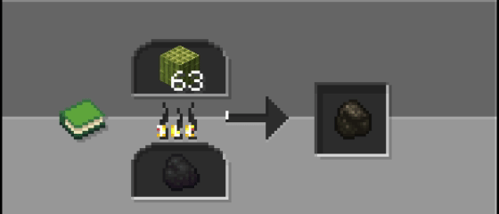
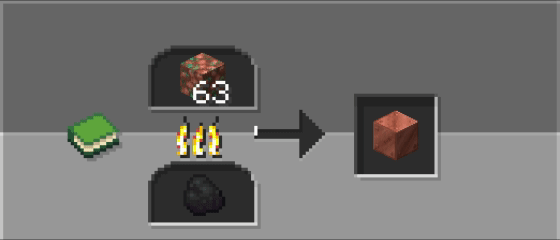
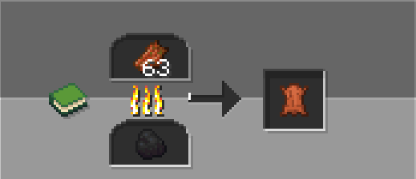

Better Brewings
Better Brewings improves Minecraft survival by adding new recipes and useful quality of life improvements.
About
Better Brewings expands Minecraft's brewing system by adding crafting recipes for potions that normally cannot be obtained through vanilla brewing mechanics.
Whether you're looking for Luck, Haste, Levitation or other special effects, Better Brewings provides intuitive and balanced recipes that make these potions accessible while preserving the vanilla experience.
Designed to integrate seamlessly with Minecraft, the mod keeps brewing simple and familiar, giving players more freedom to experiment with potion crafting without introducing new blocks or complicated mechanics.
Features
Custom Recipes
Adds new crafting recipes for blocks, items and useful resources.
Vanilla Friendly
Designed to fit naturally into Minecraft progression.
Recipes
All Recipes

Bamboo Block

Raw Block

Rotten Flesh

Saplings
Commands
General
Admin
Compatibility
| Version | Status |
|---|---|
| 1.21.11 - 26.2.x | Supported |
| 26.3 snapshots | Supported |
Installation
1. Download the datapack.
2. Place it inside the datapacks folder.
3. Run /reload.
4. Enjoy Better Furnaces.
FAQ
Does it work on servers?
Yes, Better Crafts works on multiplayer servers.
Does it require a resource pack?
No, the datapack works without any resource pack.